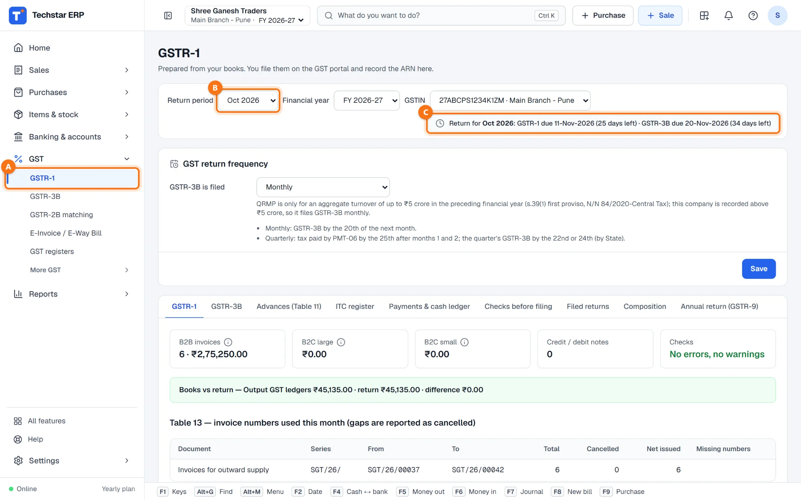
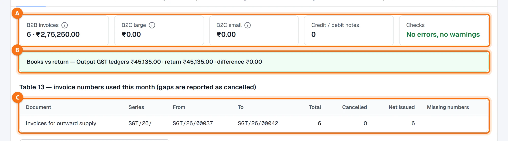
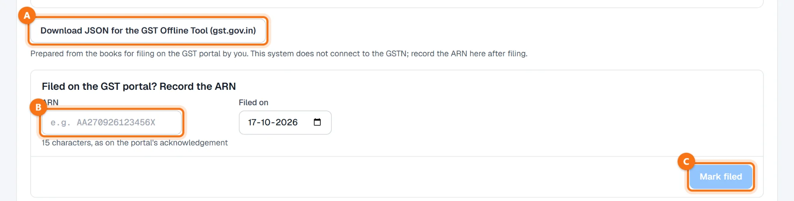
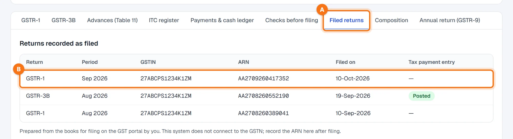

Techstar ERP मराठी आणि हिंदीतही वापरता येतो. वर उजवीकडे तुमच्या नावाच्या आद्याक्षराच्या गोल बटणावर click करा → Language (भाषा) → मराठी. ERP चा menu मराठीत दिसतो (उदा. Sales = विक्री). बिले आणि इतर कायदेशीर कागदपत्रे नेहमीप्रमाणेच छापली जातात. या guide मधले screenshots English menu चे आहेत.
सुरू करण्यापूर्वी
ERP तयार करतो, तुम्ही भरता. GSTR-1 तुमच्या सेल्स इनव्हॉइस, क्रेडिट नोट आणि पावत्यांवरून काढले जाते. हे software GSTN शी जोडलेले नाही आणि रिटर्न भरत नाही: GSTR-1 तुम्ही GST पोर्टलवर भरता आणि त्याचा ARN इथे नोंदवता.
तुमचा GSTIN save केलेला असावा — Settings → Business details & GST मध्ये (आणि प्रत्येक शाखेवर). रिटर्न प्रत्येक GSTIN साठी वेगळे बनते.
महिन्याची सर्व इनव्हॉइस टाकलेली असावीत — पहा सेल्स इनव्हॉइस कसे बनवायचे.
GSTR-1 उघडा आणि महिना निवडा
डाव्या menu मध्ये GST → GSTR-1 A वर click करा (मराठी menu मध्ये: GST → GSTR-1 (विक्री रिटर्न)). ज्या महिन्याचे रिटर्न आता देय आहे तो महिना आपोआप उघडतो.
- Return period B — रिटर्नचा महिना (उदाहरणात ऑक्टोबर 2026).
- Financial year आणि GSTIN — तुमच्या शाखांचे GSTIN वेगळे असतील तर ज्याचे रिटर्न भरायचे तो निवडा.
उजवीकडील बॉक्समध्ये C त्या महिन्याच्या देय तारखा आणि किती दिवस उरले ते दिसते. खाली GST return frequency मध्ये GSTR-3B दरमहा भरता की तिमाही (QRMP) ते दिसते; देय तारखा त्यानुसार ठरतात.

आकडे तपासा
वरच्या टाइल्स A रिटर्नचा सारांश देतात:
| टाइल | त्यात काय मोजले जाते |
|---|---|
| B2B invoices | GST नोंदणीकृत ग्राहकांना (GSTIN असलेल्या) केलेली विक्री: इनव्हॉइसची संख्या आणि taxable value. |
| B2C large | दुसऱ्या राज्यातील नोंदणी नसलेल्या ग्राहकाला ₹1 लाखापेक्षा जास्त रकमेचे इनव्हॉइस. |
| B2C small | नोंदणी नसलेल्या ग्राहकांना इतर सर्व विक्री (किरकोळ), दर आणि राज्यानुसार. |
| Credit / debit notes | महिन्यात दिलेल्या नोट. |
| Checks | रिटर्नमध्ये सापडलेल्या errors आणि warnings — काहीच नसेल तर हिरवे. |
Books vs return B महिन्याचे Output GST ledgers आणि रिटर्नमधील टॅक्स यांची तुलना करते. एखाद्या बिलाच्या हिशोबातील नोंदीत GST वेगळा असेल तर ते बिल इथे दिसते. Table 13 C मध्ये महिन्यात वापरलेले इनव्हॉइस नंबर सिरीजनुसार दिसतात; मधला नंबर गहाळ असेल तर तो रद्द (cancelled) म्हणून दाखवला जातो आणि पिवळ्या रंगात दिसतो.

रिटर्नमध्ये errors किंवा warnings असतील तर Checks of the return टेबलमध्ये प्रत्येकाचा विभाग, दस्तऐवज आणि काय दुरुस्त करायचे ते दिसते. Sales मध्ये इनव्हॉइस दुरुस्त करा आणि GSTR-1 पुन्हा उघडा — ते प्रत्येक वेळी नव्याने तयार होते. हेही पहा: रिटर्नआधी तपासणी.
JSON डाउनलोड करा
Download JSON for the GST Offline Tool (gst.gov.in) A वर click करा. फाइलचे नाव GSTR1_<GSTIN>_2026-10.json असे असते आणि त्यात तुमच्या हिशोबावरून काढलेले पूर्ण रिटर्न असते.

GSTR-1 GST पोर्टलवर भरा
ही JSON फाइल gst.gov.in वरील GST Offline Tool मध्ये वापरा, तिथे आकडे तपासा आणि तुमच्या स्वतःच्या लॉगिनने GST पोर्टलवर GSTR-1 भरा. रिटर्न भरल्यावर पोर्टल ARN (acknowledgement reference number) देते.
Techstar ERP मधून GST पोर्टलला काहीही पाठवले जात नाही. रिटर्न भरणे आणि त्यासाठी लागणारा OTP / सही — हे सर्व पोर्टलवरच होते.
ARN नोंदवा
ERP मध्ये परत येऊन Filed on the GST portal? Record the ARN खाली 15 अक्षरी ARN B पोर्टलच्या acknowledgement वर आहे तसाच टाका आणि Filed on तारीख टाका. मग Mark filed C वर click करा.
ERP त्या क्षणीचे रिटर्न ARN सह जपून ठेवतो आणि तो महिना सेल्स दस्तऐवजांसाठी लॉक होतो, म्हणजे भरलेल्या महिन्यात चुकून बदल होत नाही.
रिटर्नच्या तपासणीत अजून errors असतील तर ERP विचारतो Mark it filed anyway? — पोर्टलवर रिटर्न तसेच भरले असेल तरच हो म्हणा.
भरलेले रिटर्न पहा
Filed returns टॅबमध्ये A तुम्ही नोंदवलेली सर्व रिटर्न दिसतात: रिटर्न, महिना, GSTIN, ARN B आणि भरल्याची तारीख.

नेहमीचे प्रश्न
Techstar ERP माझे GSTR-1 भरतो का?
GSTR-1 भरल्यानंतर चूक लक्षात आली. आता काय?
Download JSON बटण राखाडी का आहे?
माझे दोन GSTIN आहेत. दोन्हींचे कसे तयार करायचे?
Table 13 मध्ये एखादा नंबर cancelled का दिसतो?
आणखी guides
Screenshots Techstar ERP मधील demo कंपनीचे आहेत (Shree Ganesh Traders, Pune). सर्व नावे, GSTIN, रकमा आणि कागदपत्रांचे नंबर नमुना माहिती आहेत.